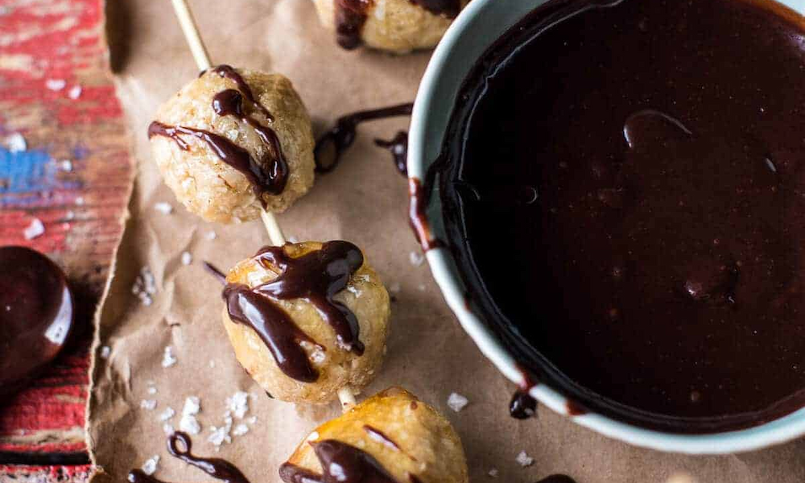

Home
Spanish
Japanese
Cajun
Cuban
Puerto Rican
Cuban Dessert Recipe
SWEET CUBAN COCONUT BALLS WITH MELTED CHOCOLATE (COQUITO ACARAMELADO)

INGREDIENTS LIST
Ingredients:
1 ounce can sweetened condensed milk or homemade coconut milk
3 cups shredded or grated coconut
1/2 teaspoon vanilla
1/2 cup honey
8 ounces chocolate